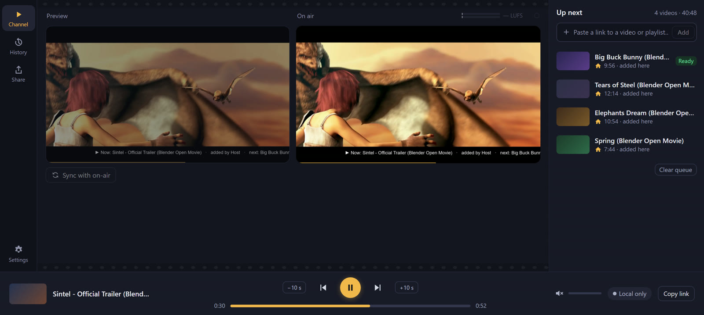
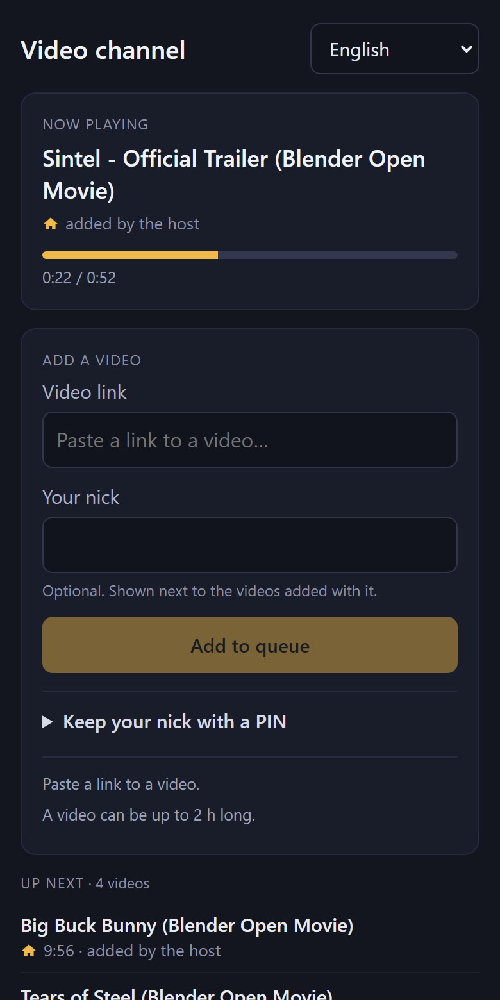

How to start
- Download and run
VRCinema.exe. Put it anywhere, there is nothing to install. - Follow the short setup. It downloads its helper tools and picks the best video encoder for your computer.
- Copy the channel link and paste it into a video player in a VRChat world.
- Add films. Paste links or drag files onto the window. They play one after another for everybody.
You run the show

- One link for the whole evening. The player in VRChat never has to be changed.
- Films from YouTube and many other sites, or from your own disk.
- Pause, jump and skip, and a preview that reacts at once.
- A queue with "play next", trimming, start times and a countdown.
- A band on the picture with the title, who added it and what is next.
- A public link is built in, with no account needed.
- OBS, a window, a screen or a camera can go on air too.
Friends add films from their phones
Share a simple web page or a QR code. Your friends paste a link and add a nick, with no app and no account.
You decide how open it is: limits, approval, a block list, and which sites are allowed.
Only the host installs VRCinema. Everybody else just watches in VRChat.

Questions
Do my friends need to install anything?
No. They only need "Allow Untrusted URLs" turned on in VRChat, because your link is not on VRChat's allowed list.
Which worlds does it work in?
Worlds with a video player where you can paste your own link, such as ProTV. In Public and Group Public instances the world's list of allowed sites can block it, so Friends and Invite instances are the safest choice. A world whose menu accepts only its own service will not work.
Is it really free?
Yes. VRCinema is open source under the MIT licence, with no ads and no subscription.
Windows says "Windows protected your PC". Is that normal?
Yes, the file is not code-signed yet. Click More info, then Run anyway.
What does my computer need?
Your computer sends the video, so upload speed matters: the more people watch, the more it needs. The program warns you when the connection looks too weak. Most videos are only repackaged, so the load on the computer is small.
Does it work on Linux?
There is a headless server for Linux with the same panel. See the manual.
Can I show any film I want?
VRCinema is meant for watching privately with friends. Whoever runs it is responsible for what is streamed. Showing films you have no rights to can break copyright law and the terms of the sites they come from.